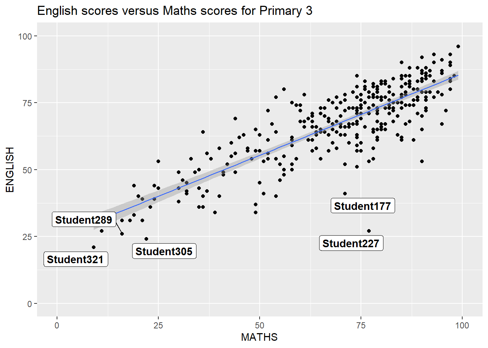
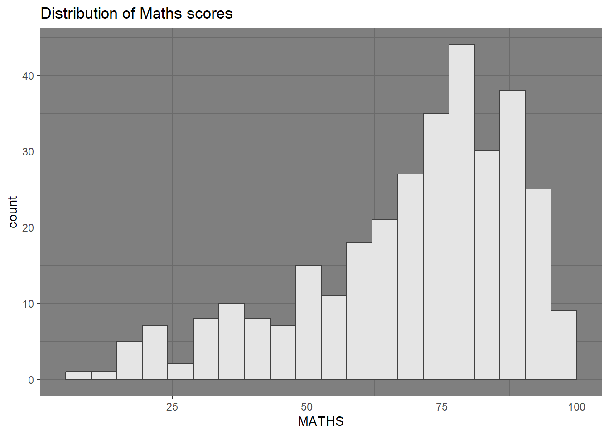
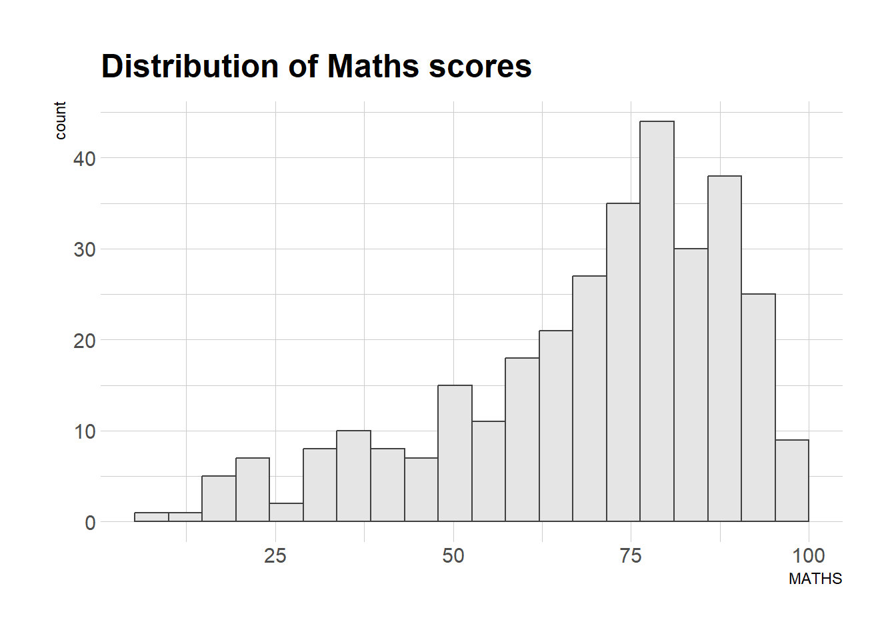

Code
pacman::p_load(ggrepel, patchwork,
ggthemes, hrbrthemes,
tidyverse)With the assistance of ChatGPT
In this chapter, we will be exploring several ggplot2 extensions to enhance the elegance and effectiveness of statistical graphics. The objectives will be to:
Beside tidyverse, below are the four packages that will be used.
Code to check if the packages have been installed, and to load them into our R environment.
pacman::p_load(ggrepel, patchwork,
ggthemes, hrbrthemes,
tidyverse)We will use a data file called Exam_data.csv which contains the year-end exam results of a group of Primary 3 students from a local school.
The code below will be used to import the “exam_data.csv” file into the R environment using the read_csv() function from the readr package, which is part of the tidyverse.
exam_data <- read_csv("data/Exam_data.csv", show_col_types = FALSE)We will check the dataset using below
glimpse(): provides a transposed overview of a dataset, showing variables and their types in a concise format.head(): displays the first few rows of a dataset (default is 6 rows) to give a quick preview of the data.summary(): generates a statistical summary of each variable, including measures like mean, median, and range for numeric data.duplicated():returns a logical vector indicating which elements or rows in a vector or data frame are duplicates.colSums(is.na()): counts the number of missing values (NA) in each column of the data frame.spec(): use spec() to quickly inspect the columnglimpse(exam_data)Rows: 322
Columns: 7
$ ID <chr> "Student321", "Student305", "Student289", "Student227", "Stude…
$ CLASS <chr> "3I", "3I", "3H", "3F", "3I", "3I", "3I", "3I", "3I", "3H", "3…
$ GENDER <chr> "Male", "Female", "Male", "Male", "Male", "Female", "Male", "M…
$ RACE <chr> "Malay", "Malay", "Chinese", "Chinese", "Malay", "Malay", "Chi…
$ ENGLISH <dbl> 21, 24, 26, 27, 27, 31, 31, 31, 33, 34, 34, 36, 36, 36, 37, 38…
$ MATHS <dbl> 9, 22, 16, 77, 11, 16, 21, 18, 19, 49, 39, 35, 23, 36, 49, 30,…
$ SCIENCE <dbl> 15, 16, 16, 31, 25, 16, 25, 27, 15, 37, 42, 22, 32, 36, 35, 45…head(exam_data)# A tibble: 6 × 7
ID CLASS GENDER RACE ENGLISH MATHS SCIENCE
<chr> <chr> <chr> <chr> <dbl> <dbl> <dbl>
1 Student321 3I Male Malay 21 9 15
2 Student305 3I Female Malay 24 22 16
3 Student289 3H Male Chinese 26 16 16
4 Student227 3F Male Chinese 27 77 31
5 Student318 3I Male Malay 27 11 25
6 Student306 3I Female Malay 31 16 16summary(exam_data) ID CLASS GENDER RACE
Length:322 Length:322 Length:322 Length:322
Class :character Class :character Class :character Class :character
Mode :character Mode :character Mode :character Mode :character
ENGLISH MATHS SCIENCE
Min. :21.00 Min. : 9.00 Min. :15.00
1st Qu.:59.00 1st Qu.:58.00 1st Qu.:49.25
Median :70.00 Median :74.00 Median :65.00
Mean :67.18 Mean :69.33 Mean :61.16
3rd Qu.:78.00 3rd Qu.:85.00 3rd Qu.:74.75
Max. :96.00 Max. :99.00 Max. :96.00 exam_data[duplicated(exam_data),]# A tibble: 0 × 7
# ℹ 7 variables: ID <chr>, CLASS <chr>, GENDER <chr>, RACE <chr>,
# ENGLISH <dbl>, MATHS <dbl>, SCIENCE <dbl>colSums(is.na(exam_data)) ID CLASS GENDER RACE ENGLISH MATHS SCIENCE
0 0 0 0 0 0 0 spec(exam_data)cols(
ID = col_character(),
CLASS = col_character(),
GENDER = col_character(),
RACE = col_character(),
ENGLISH = col_double(),
MATHS = col_double(),
SCIENCE = col_double()
)The exam_data tibble contains seven attributes, as shown above:
Categorical attributes: ID, CLASS, GENDER, RACE
Continuous attributes: MATHS, ENGLISH, SCIENCE
Annotating statistical graphs can be challenging, particularly when dealing with a large number of data points.
ggplot(data=exam_data,
aes(x= MATHS,
y=ENGLISH)) +
geom_point() +
geom_smooth(method=lm,
linewidth=0.5) +
geom_label(aes(label = ID),
hjust = .5,
vjust = -.5) +
coord_cartesian(xlim=c(0,100),
ylim=c(0,100)) +
ggtitle("English scores versus Maths scores for Primary 3")
geom_smooth() function to align the code with the latest ggplot2 standards.ggrepel is an extension of ggplot2 that provides geoms to prevent overlapping text labels.
It replaces geom_text() with geom_text_repel() and geom_label() with geom_label_repel(), ensuring labels repel from each other, data points, and plot edges.This enhances the clarity and readability of the chart.
ggplot(data=exam_data,
aes(x= MATHS,
y=ENGLISH)) +
geom_point() +
geom_smooth(method=lm,
size=0.5) +
geom_label_repel(aes(label = ID),
fontface = "bold") +
coord_cartesian(xlim=c(0,100),
ylim=c(0,100)) +
ggtitle("English scores versus Maths scores for Primary 3")
There is a warning message:
geom_smooth()` using formula = ‘y ~ x’
Warning: ggrepel: 321 unlabeled data points (too many overlaps). Consider increasing max.overlaps
the warning message means that geom_label_repeal function was unable to place labels for 321 data points because they are too close to each other.
Response:
Option 1: Increase max.overlaps
Option 2: Label only specific points which involves creating a new column that marks points to label and passing the column into aes(label = ..)
Option 3: Potentially to reduce the point size or transparency with geom_point()
Leveraging on Hands-on_Ex01, we added the below attributes:
geom_point:customize the color = “darkblue” and changed the size = 0.5, with a solid circle shape where shape = 16.
geom_smooth:changed the regression line, color = “red”, made thicker size = 1, and to display as a dashed line, linetype = “dashed”.
Refer here for the different ggplot2 point shapes.
Refer here for the different ggplot2 line types.
library(ggplot2)
library(ggrepel)
ggplot(data=exam_data,
aes(x= MATHS,
y=ENGLISH)) +
# Scatter plot with customized point appearance
geom_point(color = "darkblue", size = 0.5, shape = 16) + # change point color, size, and shape
# Linear regression line with customized color and line type
geom_smooth(method=lm,
size=1,
color="red", # line color
linetype="dashed") + # line style
geom_label_repel(aes(label = ID),
fontface = "bold") +
coord_cartesian(xlim=c(0,100),
ylim=c(0,100)) +
ggtitle("English scores versus Maths scores for Primary 3")There are 8 different built-in themes within ggplot2. They are:
theme_gray():default theme in ggplot2, with a gray background with white grid lines for readability.
theme_bw(): clean, minimalistic theme with a white background and black grid lines.
theme_classic():simple theme with a white background and no grid lines.
theme_dark():theme with a dark background and light-colored text and grid lines.
theme_light():light background theme with light-colored grid lines.
theme_linedraw():theme that uses black lines on a white background.
theme_minimal():minimalist theme that reduces non-data elements.
theme_void():clean theme with no background, grid lines, or axes.
ggplot(data=exam_data,
aes(x = MATHS)) +
geom_histogram(bins=20,
boundary = 100,
color="grey25",
fill="grey90") +
theme_gray() +
ggtitle("Distribution of Maths scores") 
ggplot(data=exam_data,
aes(x = MATHS)) +
geom_histogram(bins=20,
boundary = 100,
color="grey25",
fill="grey90") +
theme_bw() +
ggtitle("Distribution of Maths scores")ggplot(data=exam_data,
aes(x = MATHS)) +
geom_histogram(bins=20,
boundary = 100,
color="grey25",
fill="grey90") +
theme_classic() +
ggtitle("Distribution of Maths scores") 
ggplot(data=exam_data,
aes(x = MATHS)) +
geom_histogram(bins=20,
boundary = 100,
color="grey25",
fill="grey90") +
theme_dark() +
ggtitle("Distribution of Maths scores") 
ggplot(data=exam_data,
aes(x = MATHS)) +
geom_histogram(bins=20,
boundary = 100,
color="grey25",
fill="grey90") +
theme_light() +
ggtitle("Distribution of Maths scores") ggplot(data=exam_data,
aes(x = MATHS)) +
geom_histogram(bins=20,
boundary = 100,
color="grey25",
fill="grey90") +
theme_linedraw() +
ggtitle("Distribution of Maths scores") 
ggplot(data=exam_data,
aes(x = MATHS)) +
geom_histogram(bins=20,
boundary = 100,
color="grey25",
fill="grey90") +
theme_minimal() +
ggtitle("Distribution of Maths scores") ggplot(data=exam_data,
aes(x = MATHS)) +
geom_histogram(bins=20,
boundary = 100,
color="grey25",
fill="grey90") +
theme_void() +
ggtitle("Distribution of Maths scores") Refer to this link to learn more about ggplot2 Themes
ggthemes offers a collection of ggplot2 themes that replicate the style of plots from the likes of Edward Tufte, Stephen Few, FiveThirtyEight, The Economist, Stata, Excel, and The Wall Street Journal, among others.
Below are some of the examples of the different themes available.
Refer here for the comprehensive list and descrptions of all available themes.
Install and load ggthemespackages
install.packages("ggthemes")
library(ggthemes)ggplot(data=exam_data,
aes(x = MATHS)) +
geom_histogram(bins=20,
boundary = 100,
color="grey25",
fill="grey90") +
ggtitle("Distribution of Maths scores") +
theme_economist()
ggplot(data=exam_data,
aes(x = MATHS)) +
geom_histogram(bins=20,
boundary = 100,
color="grey25",
fill="grey90") +
ggtitle("Distribution of Maths scores") +
theme_wsj()ggplot(data=exam_data,
aes(x = MATHS)) +
geom_histogram(bins=20,
boundary = 100,
color="grey25",
fill="grey90") +
ggtitle("Distribution of Maths scores") +
theme_fivethirtyeight()ggplot(data=exam_data,
aes(x = MATHS)) +
geom_histogram(bins=20,
boundary = 100,
color="grey25",
fill="grey90") +
ggtitle("Distribution of Maths scores") +
theme_tufte()ggplot(data=exam_data,
aes(x = MATHS)) +
geom_histogram(bins=20,
boundary = 100,
color="grey25",
fill="grey90") +
ggtitle("Distribution of Maths scores") +
theme_excel()Refer to this link to learn more about the ggplot2 themes
The hrbrthemes package provides typography centric themes and theme components for ggplot2. This includes where labels are placed and the fonts used.
ggplot(data=exam_data,
aes(x = MATHS)) +
geom_histogram(bins=20,
boundary = 100,
color="grey25",
fill="grey90") +
ggtitle("Distribution of Maths scores") +
theme_ipsum()
The second goal is to boost productivity in a production workflow, which is the intended setting for using the elements of hrbrthemes.
Refer here to learn more.
install.packages("hrbrthemes")
library(hrbrthemes)
ggplot(data=exam_data,
aes(x = MATHS)) +
geom_histogram(bins=20,
boundary = 100,
color="grey25",
fill="grey90") +
ggtitle("Distribution of Maths scores") +
theme_ipsum(axis_title_size = 18,
base_size = 15,
grid = "Y")
axis_title_size: sets the font size of the axis title to 18base_size: adjusts the default axis label size to 15grid: remove the x-axis grid linesCreating multiple graphs is often necessary to convey a compelling visual story. Several ggplot2 extensions offer functions for combining multiple graphs into a single figure.
In this section, we will learn how to create a composite/ combined plot by merging multiple graphs. First, let create three statistical graphics by using the codes below.
p1 <- ggplot(data=exam_data,
aes(x = MATHS)) +
geom_histogram(bins=20,
boundary = 100,
color="grey25",
fill="grey90") +
coord_cartesian(xlim=c(0,100)) +
ggtitle("Distribution of Maths scores")
p1
p2 <- ggplot(data=exam_data,
aes(x = ENGLISH)) +
geom_histogram(bins=20,
boundary = 100,
color="grey25",
fill="grey90") +
coord_cartesian(xlim=c(0,100)) +
ggtitle("Distribution of English scores")
p2
p3 <- ggplot(data=exam_data,
aes(x= MATHS,
y=ENGLISH)) +
geom_point() +
geom_smooth(method=lm,
linewidth=0.5) +
coord_cartesian(xlim=c(0,100),
ylim=c(0,100)) +
ggtitle("English scores versus Maths scores for Primary 3")
p3
geom_smooth() function to align the code with the latest ggplot2 standards.There are several ggplot2 extension’s functions that support the preparation of composite figures such as grid.arrange() of gridExtra package and plot_grid() of cowplot package.
In this section, we will be using Patchwork, a ggplot2 extension specifically designed to combine multiple ggplot2 graphs into a single figure.
The Patchwork package offers a straightforward synatx, making it easy to create custom layouts. Key features include
+ operator() operator/ operator| operatorinstall.packages("patchwork")
library(patchwork)+ combines plots into a single row
p1+p2
() use for grouping and layout adjustments
p1 + p2 + plot_layout(ncol=2,widths=c(1,2))/ use to stack plots into a single column
p1/p2We can also combine 2 or more ggplots graph in one composite figure.
(p1/p2) | p3
To learn more about Patchwork, refer here
Patchwork also includes auto-tagging capabilities to label subplots within a figure, making it easier to identify them in text.
((p1 / p2) | p3) +
plot_annotation(tag_levels = 'I')
((p1 / p2) | p3) +
plot_annotation(tag_levels = '1')((p1 / p2) | p3) +
plot_annotation(tag_levels = 'A')tag_prefix and/ or tag_suffix to format tags((p1 / p2) | p3) +
plot_annotation(tag_levels = "I", tag_prefix = "Figure ", tag_suffix = "")In addition to arranging plots side-by-side based on a specified layout, the Patchwork package provides the insert_element() function.
This allows user to freely place one or more plots or graphic elements over or below another plot, offering greater flexibility in design.
Refer here for the insert_element documentation.
p3 + inset_element(p2,
left = 0.02,
bottom = 0.7,
right = 0.5,
top = 1)
The figure below is created by combining patchwork and the other ggthemes packages.
patchwork <- (p1 / p2) | p3
patchwork & theme_economist() +
theme(plot.title=element_text(size =8),
axis.title.y=element_text(size = 9,
angle = 0,
vjust=0.9),
axis.title.x=element_text(size = 9))patchwork <- (p1 / p2) | p3
patchwork & theme_wsj() +
theme(plot.title=element_text(size =8),
axis.title.y=element_text(size = 9,
angle = 0,
vjust=0.9),
axis.title.x=element_text(size = 9))
patchwork <- (p1 / p2) | p3
patchwork & theme_fivethirtyeight() +
theme(plot.title=element_text(size =8),
axis.title.y=element_text(size = 9,
angle = 0,
vjust=0.9),
axis.title.x=element_text(size = 9))patchwork <- (p1 / p2) | p3
patchwork & theme_tufte() +
theme(plot.title=element_text(size =8),
axis.title.y=element_text(size = 9,
angle = 0,
vjust=0.9),
axis.title.x=element_text(size = 9))patchwork <- (p1 / p2) | p3
patchwork & theme_excel() +
theme(plot.title=element_text(size =8),
axis.title.y=element_text(size = 9,
angle = 0,
vjust=0.9),
axis.title.x=element_text(size = 9))plot. title to 8 to improve plot’s readabilityaxis.title.y to 9 and rotated the y-axis title to vertical (90 degrees) to improve plot’s readabilityaxis.title.x to 9 to improve plot’s readabilityLearnt about the code-fold and code-summary chunk attributes to hide executable source code. where:
Valid values for code-fold include:
| Value | Behavior |
|---|---|
false |
No folding (default) |
true |
Fold code (initially hidden) |
show |
Fold code (initially shown) |
Learnt about the different R packages
install.packages(“readr”) library(readr)
install.packages(“ggplot2”) library(ggplot2)
install.packages(“ggrepel”) library(ggrepel)
install.packages(“ggthemes”) library(ggthemes)
Enhanced annotations with the use of ggrepeal - help to repel overlapping text labels, ensuring clear and readbable annotations
Introducing of professional themes with ggthemes and hrbrthemes - offer additional themes , geoms, and improved asthetics and typography.
Combining plots with patchwork - allows for the creation of composite figures by combining multiple ggplot2 graphs together.